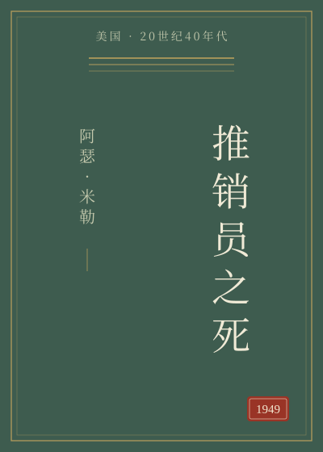
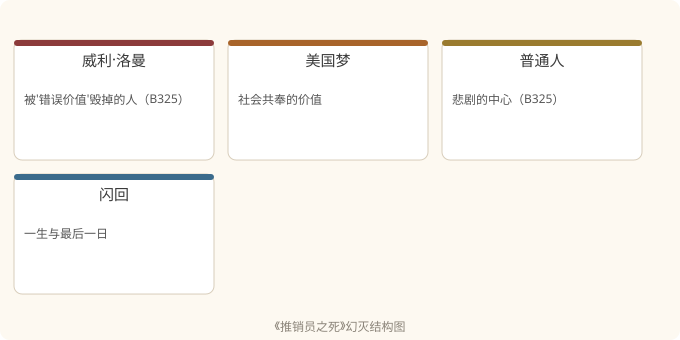

推销员之死
一、基本信息
| 作者 | 阿瑟·米勒 |
|---|---|
| 成书/出版 | 1949年（Britannica B325：Death of a Salesman (1949)——'won a Tony Award for best play and a Pulitzer Prize for drama'） Arthur Miller — Encyclopaedia Britannica（百科全书） |
| 国别/地区 | 美国 |
| 时代 | 现当代 · 20世纪40年代 |
| 体裁 | 戏剧（两幕） |
| 语言 | 英语 |

《推销员之死》幻灭结构图（主题·结构图）
二、创作背景
Britannica（B325）：Death of a Salesman——'one of the most famous American plays of its period'（其时代最著名的美国剧作之一）。
Britannica（B325）：'the tragedy of Willy Loman, a man destroyed by false values that are in large part the values of his society'——威利·洛曼的悲剧：一个被'错误价值'毁掉的人，而这些价值大部分正是他的社会所奉行的。
米勒把'普通人'置于悲剧中心（B325：Miller believed in placing 'the common man' at the center of tragedy）。
三、内容脉络
推销员威利·洛曼的最后一日与一生闪回：他被自己与社会共同奉行的'错误价值'所毁（B325：destroyed by false values that are in large part the values of his society）。
剧终的死亡细节（自杀说——通说待核，B325未载）。
四、主要人物表
| 人物 | 身份 | 说明 |
|---|---|---|
| 威利·洛曼（Willy Loman） | 推销员 | B325 点名主角 |
| 比夫（Biff） | 长子 | （通说待核，B325未载） |
| 琳达（Linda） | 妻子 | （通说待核，B325未载） |
五、主题与艺术特点
- '错误价值'的社会批判：美国梦的幻灭（B325 语境——false values that are... values of his society）。
- 普通人作为悲剧主角（B325：'In fact, it is the common man who knows this fear best.'）。
- 时间线与闪回的心理剧结构（通说待核）。
六、影响与评论
- Britannica：'one of the most famous American plays of its period'（B325）。
Arthur Miller — Encyclopaedia Britannica（百科全书） - Britannica：获Tony奖最佳剧作与普利策戏剧奖（B325）。
Arthur Miller — Encyclopaedia Britannica（百科全书）
七、阅读建议
难点
- 现实、回忆与幻想交织的时间线。
- 美国梦与推销员职业的时代语境。
- 《推销员之死》中译本（人民文学/上海译文等版本——通说待核）。
- 英文原版（公有领域状态待核）。
米勒首选；可与《炼狱》（1953）对读。
八、待核实
- 1949年2月首演剧场（Morosco Theatre说）与日期待核（B325未载）。
- 威利·洛曼自杀结局、比夫/哈皮/琳达人名核对。
- 1951年电影改编待核。